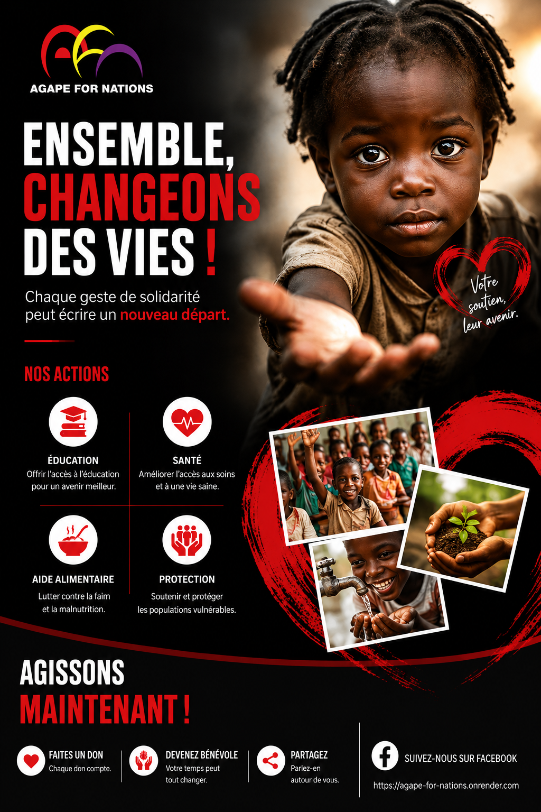

Ramener chaque enfant
de la rue vers un chemin.
Nous marchons aux côtés des enfants en situation de rue pour les reconstruire, un pas après l'autre, et les accompagner à marcher avec Dieu.

Nous marchons aux côtés des enfants en situation de rue pour les reconstruire, un pas après l'autre, et les accompagner à marcher avec Dieu.

C'est un enfant en chemin. Notre rôle est de marcher à ses côtés — l'écouter, le nourrir, le protéger, et lui ouvrir une voie de retour vers sa famille, l'école, et sa foi.
AGAPE FOR NATION agit chaque jour dans les rues, les marchés et les gares pour que ce chemin existe réellement, un enfant à la fois.
« Rendez la justice au faible et à l'orphelin, faites droit au malheureux et au pauvre. »
Psaume 82:3De la rue à la stabilité : accueil, reconstruction, réinsertion.
Nos éducateurs vont chaque jour à la rencontre des enfants là où ils vivent, pour bâtir une relation de confiance.
Soins, repas, écoute et accompagnement spirituel : nous prenons soin de l'enfant dans son entièreté.
Nous travaillons à la réunification familiale et à la reprise du chemin scolaire ou d'un apprentissage.
Que ce soit par un don, un partenariat ou du bénévolat, votre geste change une trajectoire.
« Tout ce que vous avez fait à l'un de ces plus petits, c'est à moi que vous l'avez fait. » — Matthieu 25:40
Soutenir maintenant